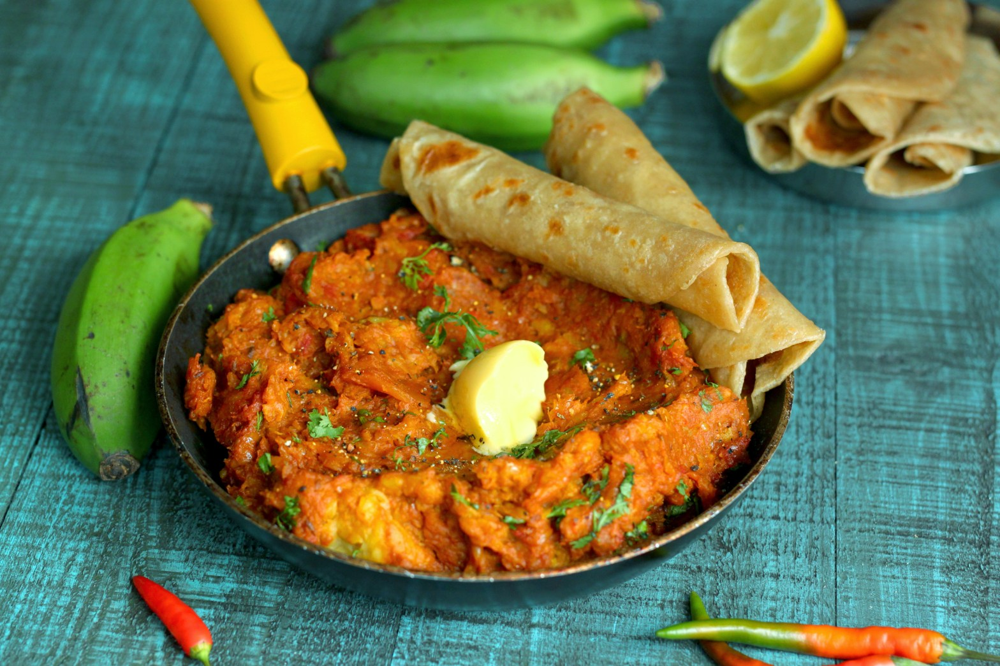
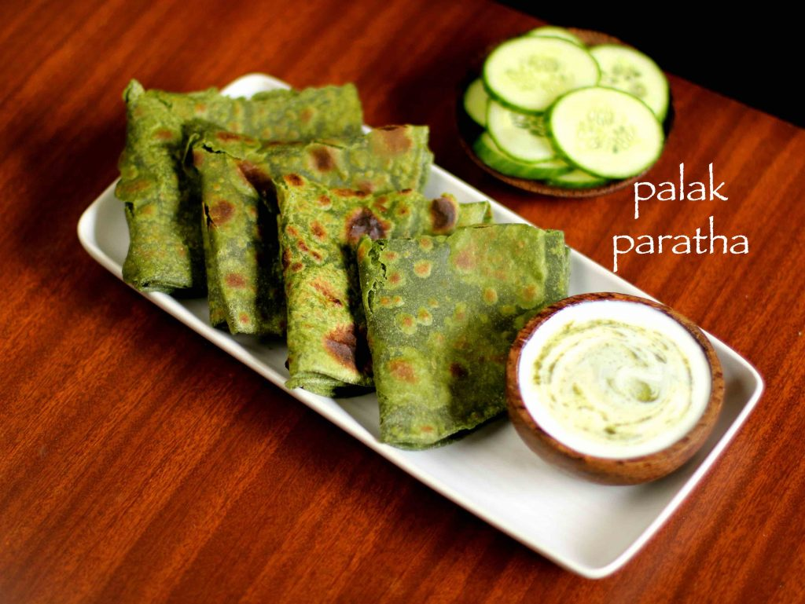

Recipes
How to cook the perfect Pilau Nyama
Steps
Boil your beef with a little spices till tender. save the stock for later use
Saute your onions and add in the ginger garlic mixture.
Add the pilau masala and let cook till the onions are brown.
Add in the beef and the tomato paste, cover and let cook for 5 minutes. Season.
Add in your rice and stir till the rice is coated
Add in water and a the beef stock, ensure it adds up to six cups of liquid,
and let cook till the rice is dry under medium heat. Serve with your sliced tomatoes.

How to cook the perfect Ugali
Steps
Boil water until it bubbles.
The water should be very hot.
This ensures the ugali will cook perfectly
Add a cup full of flour into the water.
Let it cook a few seconds until water
starts to cover the flour
Use a wooden spoon to quickly start mixing
the flour and water
Add a handful of flour and continue to mix
the water and flour it will start to come together
Reduce heat to medium and keep turning the ugali as
it continues to stick together
Gather the ugali and press it onto the side of the sufuria
Place the wooden spoon under the ugali and form into a ball
in the middle of the sufuria
Repeat pressing the ugali on the side of the sufuria and
turning it to the middle
Once the ugali has become firm, turn it once more and smoothen
it into a round. You will know your ugali is ready once you start
to smell the aroma clearly
Turn the ugali over onto a plate
Dip the wooden spoon into water and use it to smoothen the ugali
into a round ball on the plate
Serve the ugali whole or slice. Enjoy with your favorite stew, meat, veggies, fish etc

How to cook the perfect Matoke
Steps
Peel the plantains, cut into cubes, sprinkle with lemon juice, and set aside.
Heat oil in a large pan. Fry the Onion, tomatoes, green pepper, hot pepper, and garlic together.
Add spices to taste. Add meat or broth. Continue frying and stirring until the meat is nearly
done or until the broth is starting to boil.
Reduce heat. Add plantains. Cover and simmer over low heat until plantains are tender
and meat is done. Serve matoke (matooke, if you prefer) hot.

How to cook the perfect Palaka Chapati
Steps
firstly, in a large vessel add enough water and get to boil.
further add washed palak leaves.
get the water to boil. do not over boil as palak will loose its nutritious.
transfer the blanched palak into blender without adding water.
also add in ginger and chilli. cool completely.
further blend to smooth puree without adding any extra water.
palak paratha dough recipe:
firstly, in a large bowl take 2 cups of wheat flour.
further add ½ tsp ajwain, salt to taste and 2 tsp oil.
also add prepared palak puree.
combine well making sure the palak gets mixed well uniformly.
furthermore, add water as required and knead for 5 minutes.
make sure to knead to smooth and soft dough.
grease the dough with little oil.
cover with moist cloth and rest for 30 minutes.
palak paratha preparation recipe:
now pinch a medium sized ball dough, roll and flatten it.
also dust with some wheat flour.
further roll it in a thin circle like chapathi or paratha.
now on a hot tawa place the rolled paratha and cook for a minute.
furthermore, when the base is partly cooked, flip the palak paratha.
also brush oil / ghee and press slightly.
further, flip again once or twice till both the sides are cooked properly.
finally, serve palak paratha with raita and pickle.

 Mukimo, popularly known as irio
Mukimo, popularly known as irio